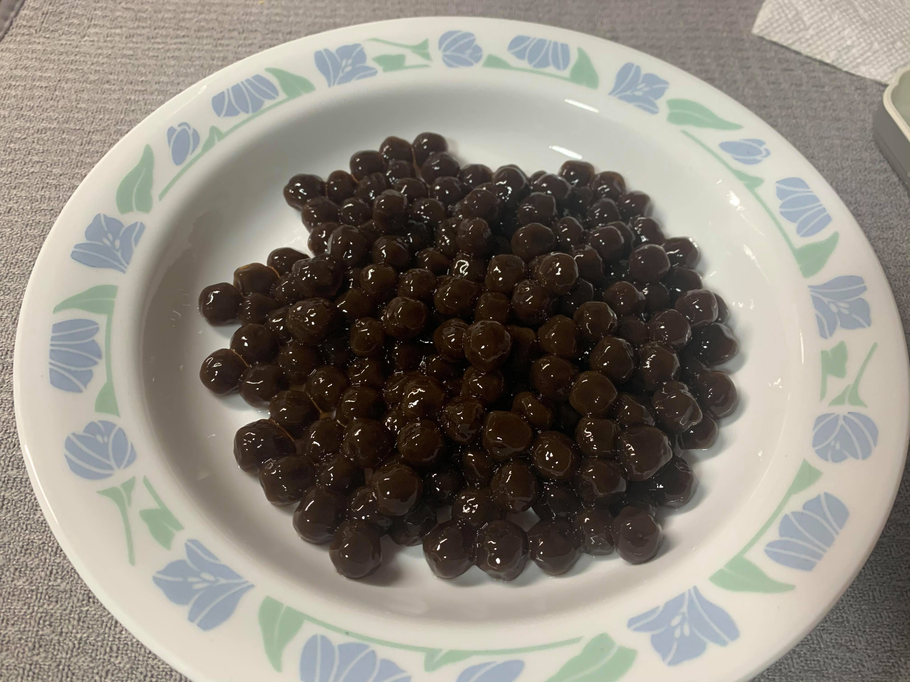

Tapioca Pearls

Ingredients:
- 1/2 cup Uncooked tapioca pearls for every 1 cup cooked pearls
- 10 cups Water for every 1/2 cup uncooked tapioca pearls
- Optional: 2 tbsp brown sugar or to preference
Instructions:
- In a large pot, bring the water to a rolling boil.
- Add the tapioca pearls and wait for the boba to float (about 30 seconds). Once all the pearls are floating, reduce the heat to medium and let boil for 30 minutes uncovered.
- After 30 minutes, remove from heat and let rest covered for another 30 minutes.
- Strain the pearls and rinse with cold water to remove excess starch.
- Optionally, mix in the brown sugar and let rest for 10 min.